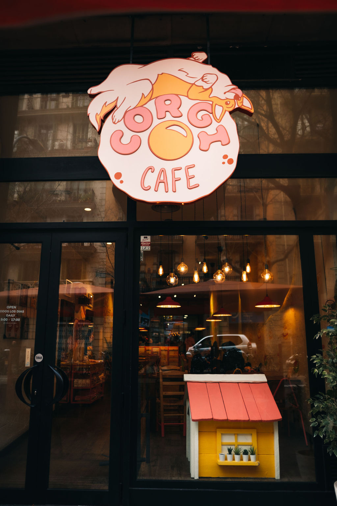

Apie Corgi Café
Corgi Café – tai vieta, kur kavos aromatas susitinka su draugiškais ir žaismingais corgi šuniukais, sukurdama unikalią patirtį kiekvienam lankytojui. Čia galima ne tik mėgautis aukštos kokybės kava, gardžiais desertais bei įvairiais gėrimais, bet ir atsipalaiduoti bendraujant su mūsų mielais keturkojais draugais. Kavinėje vyrauja jauki, šilta ir draugiška atmosfera, kuri leidžia pabėgti nuo kasdienio skubėjimo, sumažinti stresą ir pasisemti gerų emocijų.
Kavinė buvo įkurta 2023 metais, siekiant sukurti išskirtinę erdvę gyvūnų mylėtojams, ir labai greitai tapo viena mėgstamiausių vietų tiek vietinių gyventojų, tiek miesto svečių. Mūsų corgi šuniukai yra ne tik itin draugiški ir žaismingi, bet ir atsakingai prižiūrimi, reguliariai tikrinami veterinarų bei pripratę prie žmonių dėmesio. Dėl to kiekvienas apsilankymas Corgi Café tampa ne tik maloniu, bet ir saugiu bei komfortišku potyriu visai šeimai.
Corgi Café siekia sukurti erdvę, kurioje harmoningai susijungia meilė gyvūnams, kokybiškas maistas ir bendruomeniškumas. Mums svarbu, kad kiekvienas lankytojas jaustųsi laukiamas ir galėtų čia praleisti laiką taip, kaip jam patinka – ar tai būtų ramus rytas su puodeliu kavos, ar linksmas susitikimas su draugais. Kavinėje reguliariai organizuojami teminiai renginiai, gimtadienių šventės, edukaciniai susitikimai bei specialios akcijos, skirtos tiek suaugusiems, tiek vaikams.
Be to, Corgi Café skatina atsakingą požiūrį į gyvūnų gerovę, šviečia lankytojus apie tinkamą šunų priežiūrą ir stiprina ryšį tarp žmonių bei gyvūnų. Tai vieta, kur galima ne tik skaniai pavalgyti ar išgerti kavos, bet ir patirti nuoširdų džiaugsmą, pozityvias emocijas bei sukurti gražius prisiminimus. Nesvarbu, ar ateini vienas, su šeima ar draugais – Corgi Café visada pasitiks su šypsena, šiluma ir linksmais corgi šalia
